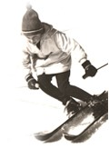
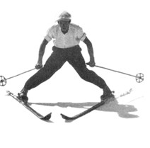
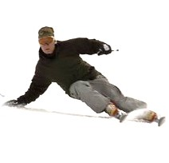
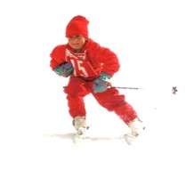
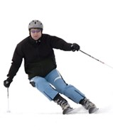
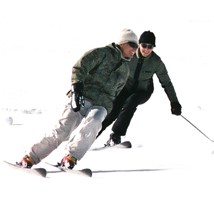

Grundlegende Bewegungsmuster des Skifahrens im abfallenden Gelände sind die Schussfahrt in der Falllinie, die Schrägfahrt schräg zur Falllinie, das seitliche Abbiegen zum Hang aus der Schussfahrt oder aus der Schrägfahrt heraus, der sogenannte Bogen (auch Kurve genannt), sowie der Bogenwechsel über die Falllinie bzw. über die Schusslinie. Der Bogenwechsel wird Schwung genannt. Die Techniken, mit denen ein Bogenwechsel eingeleitet wird – die Schwungtechniken – sind teilweise unterschiedlich von jenen Techniken, mit denen der Bogen jeweils funktional oder ästhetisch ausgesteuert wird. Durch den Schwung kann der Skifahrer einen Richtungswechsel über die Falllinie vornehmen, z. B. um auf der präparierten Skipiste zu bleiben. Des Weiteren wird je nach Schwungtechnik die Hangabtriebskraft gebremst und das Tempo kontrolliert. Dasselbe geschieht, wenn der Skifahrer aus der Falllinie, bzw. aus der Schusslinie heraus bloß mit einem Bogen seitlich zum Hang hin bremsend abbiegt. Zudem dienen Schwünge und das Aussteuern der Bögen dem Erleben von Geschwindigkeit und Bewegungsästhetik.
Quelle: de.wikipedia.org/wiki/Skifahren
| S |  | |
| A |  |  |
| B |  |  |
| C |  |